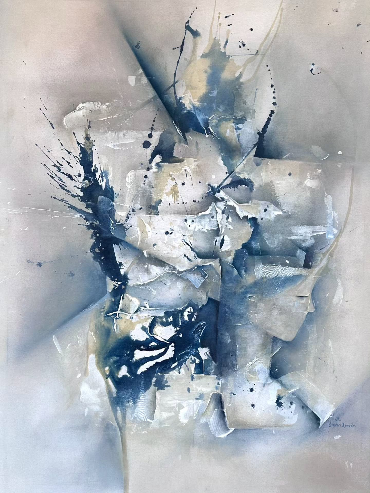
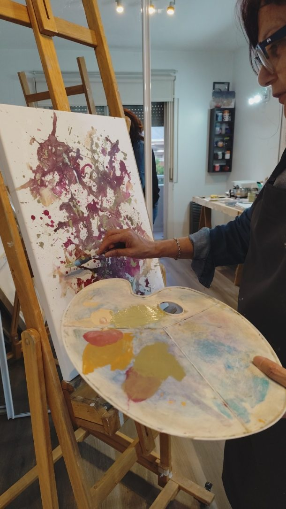
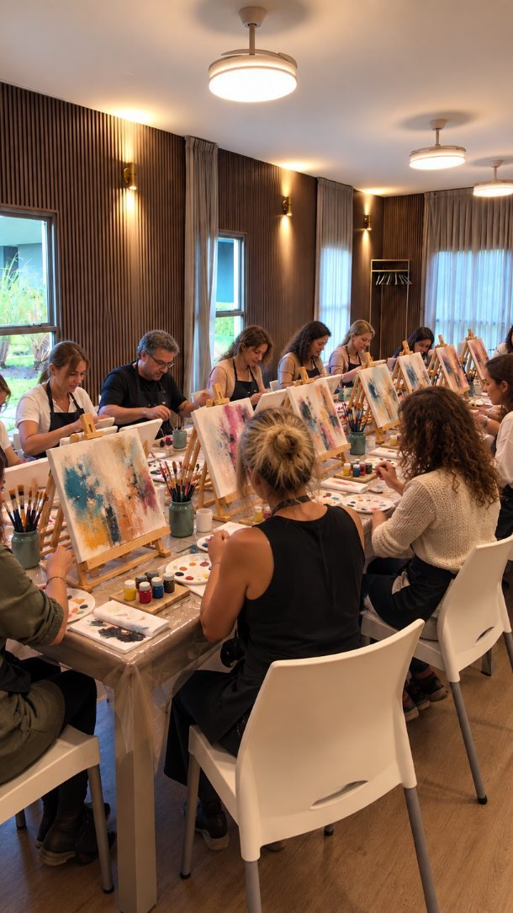
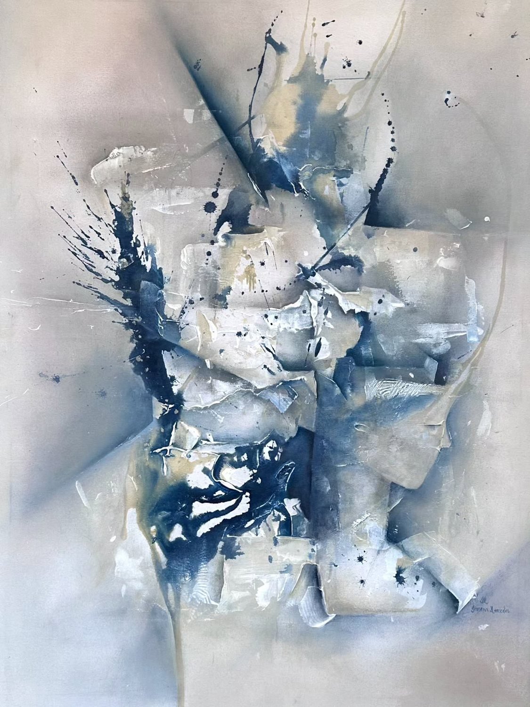
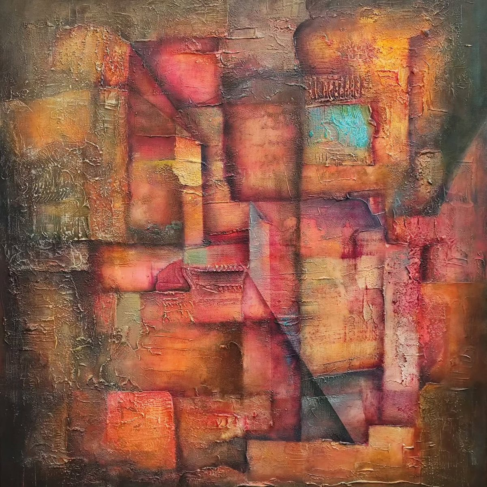
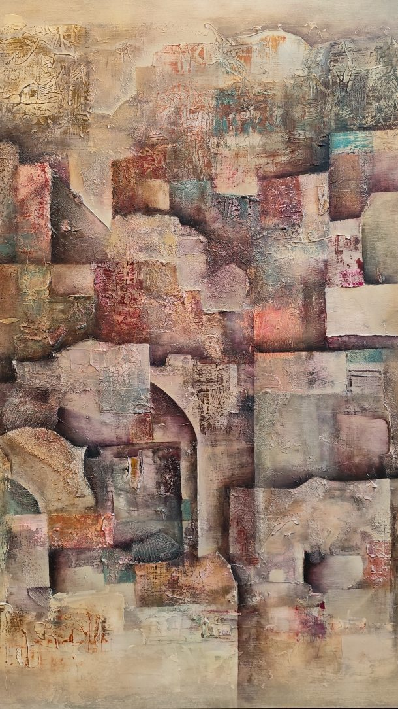
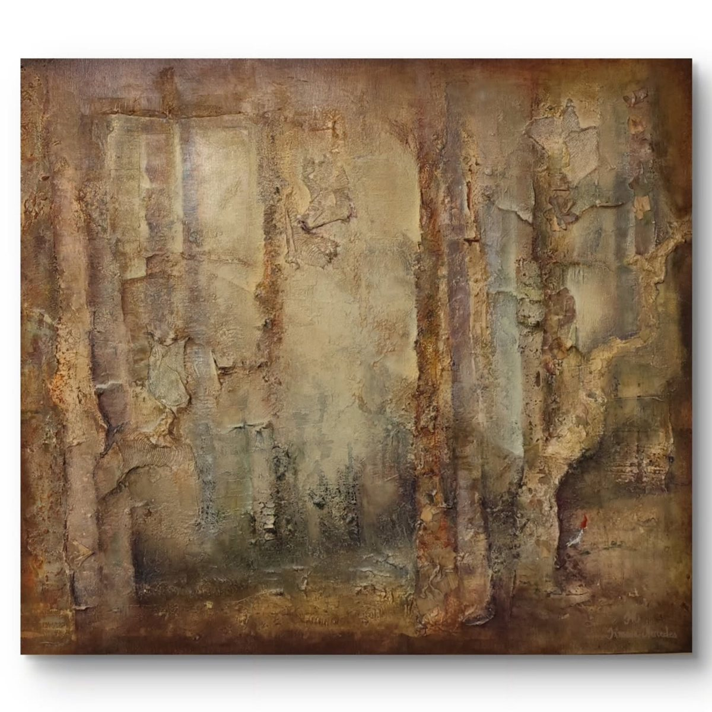
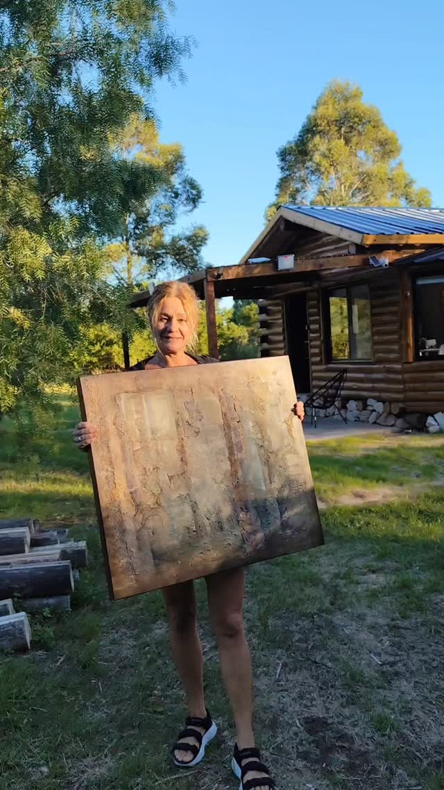
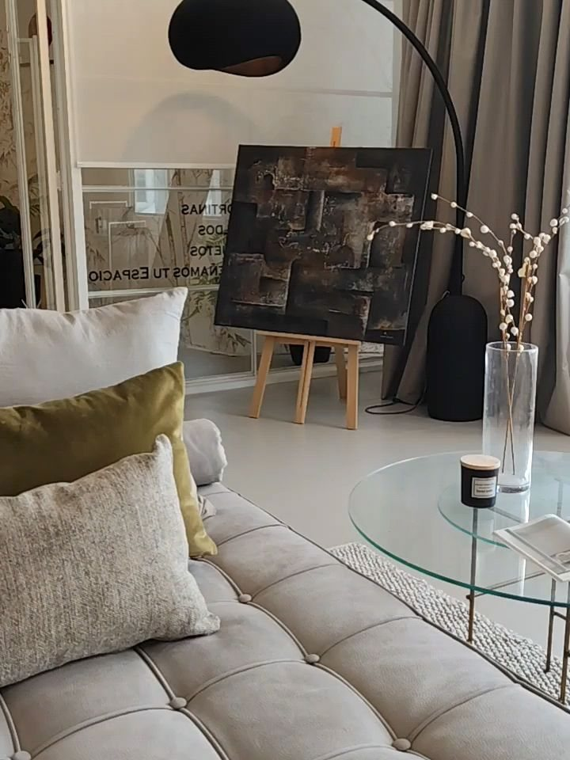
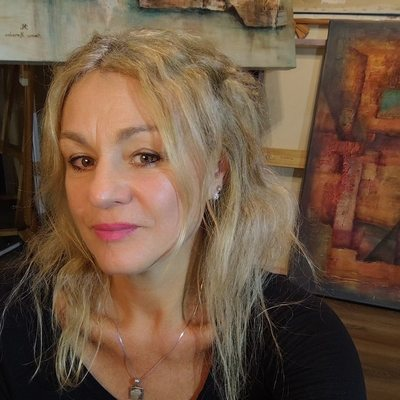

Artista visual y cantante
Música, pintura e intuición. Donde el sonido se transforma en color.
Taller de pintura intuitiva
Elegís la música que te emociona y la llevamos al lienzo. En 4 encuentros presenciales exploramos el ritmo, el color, la emoción y las texturas, y te llevás tu propia obra terminada.

Bastidor de 45 × 60 cm de excelente calidad, marca Di Mola, para que te lleves tu obra.
Acrílicos, pinceles, espátulas, marcadores, óleo pastel, gesso, lápices acuarelables, carbonilla, papel de 300 g, tinta china y delantal.
Playlists con distintos paisajes sonoros para que elijas la que más te movilice. Cada encuentro es una invitación a escuchar y transformar el sonido en obra.
Acompañamiento personalizado en un taller cálido y creativo.
Paternal, CABA. Cerca de Juan B. Justo y Boyacá, a 10 minutos de Villa Crespo. Encuentros semanales de 2 horas.
Consultá disponibilidad: los cupos de cada grupo son limitados.

Edición especial
Un encuentro único de 3 horas para salir de la rutina y terminar el día con una obra creada por vos. Podés venir sola o compartirlo con alguien que quieras.
Lo que crearon
Obra original
Piezas únicas en técnica mixta y acrílico. Escribime para consultar disponibilidad, precio y envío.






Obra a pedido
Si estás proyectando tu casa, tu cabaña o un local, puedo crear una pieza única, desde el concepto hasta la obra final, en diálogo con la arquitectura y el entorno. Así nacieron las obras para Paso de los Ciervos y para los ambientes de Casa Vaz.

Soy artista visual y cantante. Mi trabajo nace en la intersección entre la música y la pintura: exploro cómo el ritmo, las texturas y el color pueden traducir lo que escuchamos, transformando el sonido en gesto, en materia, en obra.
Comparto esta experiencia a través de Música a la Obra, un taller donde te invito a crear pintura intuitiva inspirada en la música que vos elegís. También participo en proyectos musicales en vivo y mis obras forman parte de espacios y colecciones.
La música deja de sonar, pero sigue resonando en la obra.
Pronto nuevas fechas.
Escribime por mensaje y te cuento los próximos grupos, la próxima tarde especial o las obras disponibles.